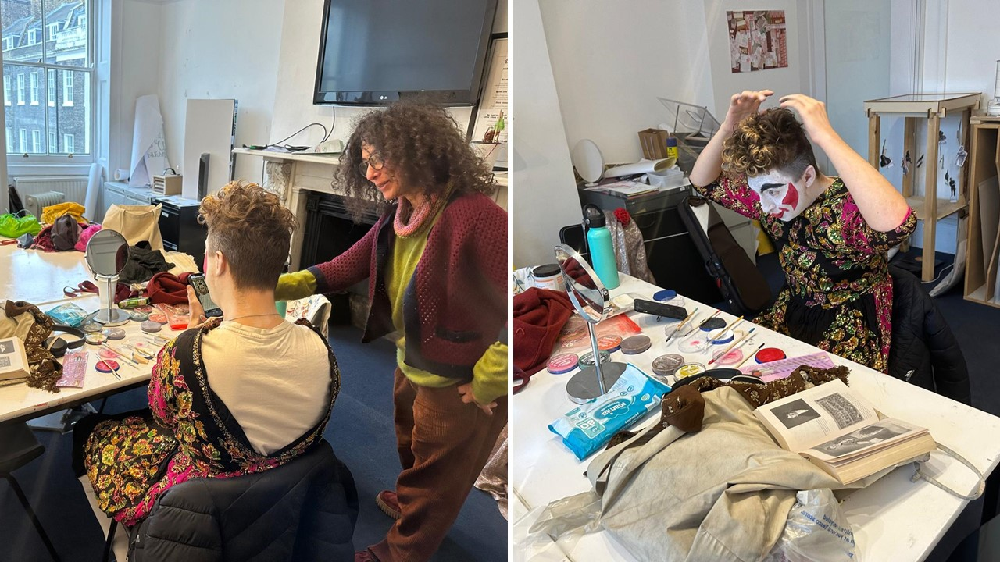
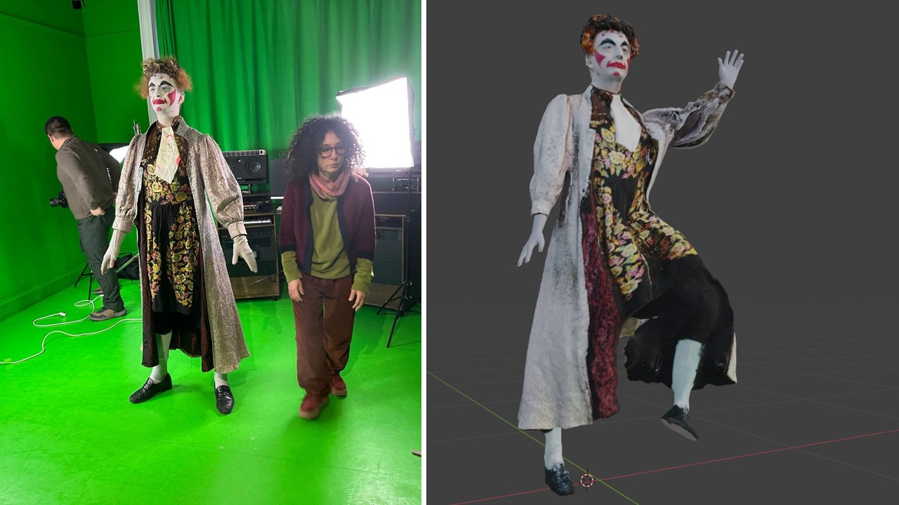
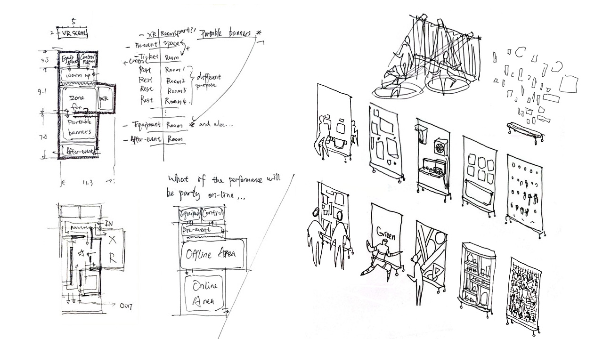
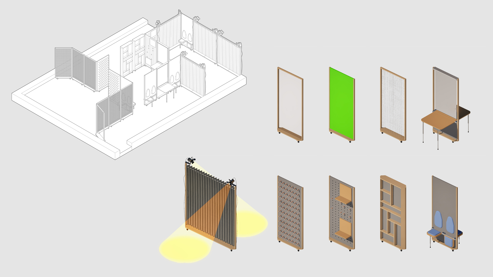

The world is moving towards digital technologies, where will the whole fabric of architectural materiality shift? How do we act as designers between the digital and the physical? This project deals with This issue through the creation of VR and AR performances in collaboration with the local community in the Archway, London.
Here in Archway, I did some interventions that takes place through AR where the physical world is interrupted by digital objects. Here is an example, tested in the Archway upcycling group, where AR ornaments are placed on a stall. Another example, shows me as a street artist, performing AR drawings on Dick Whittington's cat near navigator square.
Drawing on the design principles of tarot cards and their narrative-guiding nature, I created a series of prompt cards. Each card represents a cultural trait of Archway and served as a conversation starter with local residents, leading to a variety of personal stories. These stories then formed the foundation of the VR experience, where each scene is linked to a local relationship—either with a community organization or a piece of history introduced through those conversations.
Isabel is the founder of theatrical group “Kogan Academy of Dramatic Arts”. She was instrumental in Islington being successful in CEZ, but soon after she lost her academy and the space due to high rental cost. Milo, who was Isabel's student, will portray Grimaldi (The world's first modern clown, who was based in Archway), guiding us through an interactive interpretation of the Virtual Archway.
In the green room we started to use photogrammetry to scan Milo to capture his digital double for the VR. We also introduced Mo-Cap to enable live performances.
Work-in-progress of the VR scene designs with critical scripts created by Milo. It is worth mentioning the in the last scene, the voice cover and the scripts are done by a combination of two AIs, we are testing how ai as an autonomous system can be used to generate more contents.
Our project has been assigned a space in the TFL building by my colleagues, where we will implement our mixed reality performance.
To accommodate the constantly evolving content of the VR performances, I developed a functional zoning strategy for the space, along with a series of movable modular panels.
Updates are on the way—new content will be revealed shortly.